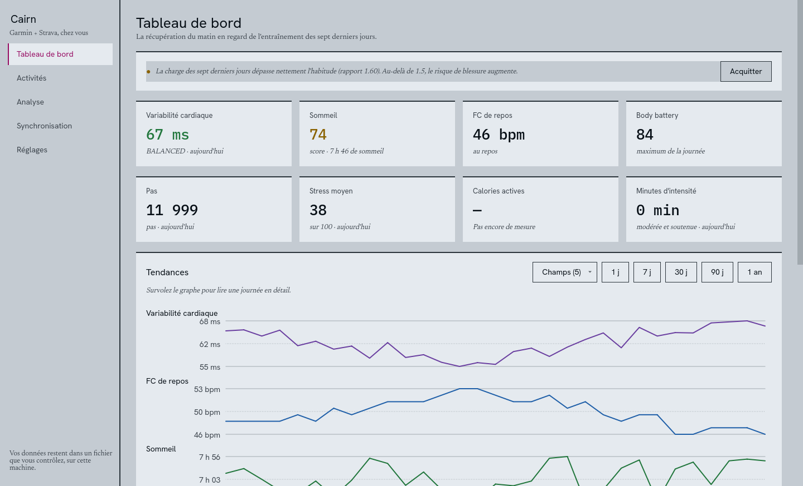
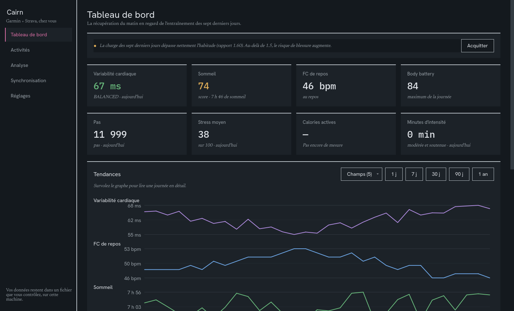

Vos données Garmin et Strava, réunies chez vous.
Cairn les rapproche sur votre machine, dans un fichier qui vous appartient.
Une grosse semaine
exemple
| Jour | Sommeil | VFC | FC repos | Sortie | Durée | D+ |
|---|---|---|---|---|---|---|
| Lun | 7:40 | 62 | 48 | route | 1:30 | 450 |
| Mar | 7:10 | 60 | 49 | repos | ||
| Mer | 6:50 | 55 | 51 | enduro | 2:00 | 1200 |
| Jeu | 6:30 | 51 | 53 | enduro | 2:30 | 1400 |
| Ven | 6:20 | 47 | 55 | route | 3:00 | 900 |
Pourquoi Cairn ?
Garmin sait comment vous avez dormi. Strava sait ce que vous avez roulé. Ni l’un ni l’autre ne rapproche les deux, faute de se parler.
Garmin le voit
Vous enchaînez une grosse semaine. Depuis trois nuits, votre variabilité cardiaque baisse et votre fréquence de repos monte.
Strava le voit
Vous avez accumulé le dénivelé en enduro et trois heures de route.
Cairn les rapproche
Mais personne ne rapproche les deux, et c’est justement là qu’une surcharge se repère avant qu’elle ne coûte cher. Cairn réunit les deux sources, comprend qu’une sortie remontée des deux côtés n’en fait qu’une, et place la récupération de la nuit en face de l’entraînement du jour.
Que fait-il ?
Synchronisation nocturne
Une passe chaque nuit. Les réponses brutes des deux services et vos fichiers
.fitd’origine sont conservés : rien ne se perd, et tout peut être recalculé plus tard.Plus de doublons
Une sortie enregistrée sur la montre remonte à la fois dans Garmin et dans Strava. Cairn n’en garde qu’une, avec les capteurs du premier et le matériel du second.
Récupération et charge
Sommeil, variabilité cardiaque et fréquence de repos rapprochés des sorties du même jour : le croisement qu’aucun des deux services ne sait faire.
Résumé hebdomadaire
Un modèle installé avec l’application met votre semaine en mots, hors ligne. Il ne calcule rien : les chiffres viennent tous de vos données, et s’il en invente un, il est écarté.
Application de bureau
Une fenêtre pour relier vos comptes, lancer une synchronisation et voir l’essentiel. Rien à installer à côté : posez-la sur une clé USB, elle emporte ses réglages et ses données.
Analyse seconde par seconde
Vos fichiers
.fitsont décodés point par point : temps réellement passé dans chaque zone de fréquence cardiaque, dérive cardiaque, lecture fine d’une sortie.
À quoi ressemble l’application ?
Le tableau de bord : la récupération de la nuit en face de l’entraînement, sur huit semaines.


Où en est le projet ?
Cairn est en construction et n’a pas encore de version stable. Voici où en sont les choses, sans embellir.
| État | Quoi |
|---|---|
| fait | Synchronisation Garmin et Strava, fusion des doublons, reprise après coupure |
| fait | Décodage des fichiers .fit, zones de fréquence cardiaque, charge d’entraînement |
| fait | Analyse intégrée : zones d’intensité, volume par discipline, charge hebdomadaire |
| fait | Charge chronique et aiguë, comparaison à vos propres moyennes, détection de surcharge |
| fait | Résumé hebdomadaire rédigé par un modèle local, envoi sur Discord |
| à venir | Avertissement automatique dès qu’un seuil de fatigue est franchi |
Et au premier lancement ?
Rien à préparer : l’application emporte sa base de données et son modèle. Au premier lancement, la page Réglages choisit où ranger vos données, crée la clé qui chiffrera vos accès, prépare la base et relie vos comptes. Garmin n’ouvrant pas son API aux particuliers, Cairn ouvre une session et n’en garde que le jeton, chiffré : votre mot de passe n’est jamais enregistré.
cairn.db
Tout tient dans un fichier, cairn.db. Le sauvegarder suffit à sauvegarder Cairn ; le copier ailleurs suffit à déménager.
Où le télécharger ?
Une application autonome : ni Python, ni base de données, ni modèle à installer à côté. Vous la lancez, elle fonctionne.
| Plateforme | Fichier | Notes |
|---|---|---|
| Linux x86-64 | Cairn-x86_64.AppImage | chmod +x puis exécuter |
| Windows x86-64 | Cairn-windows-x86_64.zip | Décompresser, puis lancer Cairn.exe |
| macOS Apple Silicon | Cairn-macos-arm64.dmg | Non notarisé : xattr -dr com.apple.quarantine |
| macOS Intel | Cairn-macos-x86_64.dmg | Non notarisé : xattr -dr com.apple.quarantine |
Chaque version emporte le modèle qwen3:0.6b, ce qui explique ses quelque 800 Mo. C’est le prix d’un résumé qui tourne hors ligne, sans rien installer et sans qu’une ligne de vos données ne quitte la machine. Si vous faites déjà tourner Ollama ailleurs, indiquez son adresse dans les réglages : Cairn s’en servira.
Chaque fichier est publié avec son empreinte SHA-256. Faute de signature payante, Windows et macOS afficheront un avertissement au premier lancement.
Sous Linux et macOS, en une commande :
curl -fsSL https://devfrp.github.io/Cairn/get.sh | shOù vont mes données ?
Cairn ne s’adresse qu’à Garmin et à Strava, et seulement pour récupérer ce qui vous appartient. Aucun service tiers, aucune télémétrie, aucun compte à créer. Vos données et vos fichiers d’activité restent sur votre machine, et cette page ne charge ni police ni script venus d’ailleurs.